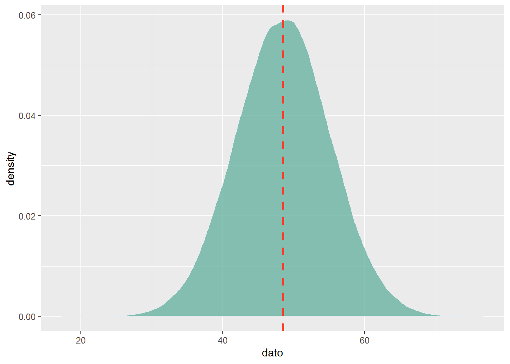

Capítulo 10 Modelos de distribución
En esta sección introduciremos algunos elementos matemáticos que no deben intimidarnos! Si bien las ecuaciones son aparentemente complejas el principio que hay detrás es muy elemental y se pude dominar mejor viendo los videos sugeridos.
10.1 Binomial
Recordemos la ecuación de la distribución Binomial:
\[\begin{equation} P\left( x \right) = \frac{{n!}}{{k!\left( {n - k} \right)!}}p^k q^{n - k} = \left( {\begin{array}{*{20}c} n \\ k \\ \end{array}} \right)p^k q^{n - k} \tag{9.1} \end{equation}\]
Donde: \(n\) es el número de ensayos. \(k\) es el número de éxitos. \(p\) es la probabilidad de exíto en un ensayo. \(q=1-p\) es la probabilidad de fracasar en un ensayo.
Por favor no se asuste por la aparente complejidad de la ecuación. Para simplificar la interpretación usaremos en lugar de la ecuación, el álgebra del modelo. Si desea aprender un poco mas de la distribución binomial le recomiendo el video que ha preparado Khan Academy. con un interesante acento mexicano.
\[\begin{equation} P\left( x \right) \sim \mathbf{Bin}(n,p) \tag{9.1} \end{equation}\]
\(P(x)\) es la probabilidad de un valor especifico de \(x\), el cual se distribuye de forma binomial \(Bin\) con los parámetros: \(n\) que corresponde al número de ensayos y \(p\) a la probabilidad.
A continuación, vamos a generar un set de \(n\) datos con una probabilidad dada \(p\). Estos datos son almacenados en un dataframe y luego visualizados como una distribución de frecuencias. La línea azul representa el promedio de esos datos.
n<-10 # numero de datos
p<- 0.5 # probabilidad (~proporcion de unos)
# Generemos datos con esa informacion
daber<-data.frame(estimado=rbinom(n, 1, p))
# Grafiquemos
library(ggplot2)
ggplot(daber, aes(x=estimado)) +
geom_histogram(aes(y=..density..), # Histograma y densidad
binwidth=.1, # Ancho del bin
colour="black", fill="white") +
geom_vline(aes(xintercept=mean(estimado, na.rm=T)),
color="blue", linetype="dashed", size=1) # media en azul
10.1 Ejercicio:
Varié primero el número de datos y luego la probabilidad haciéndola cercana a cero y luego cercana a uno. Vea como cambia el promedio con el número de datos y la probabilidad.
10.2 Poisson
Recordemos la ecuación de la distribución Binomial:
\[\begin{equation} P\left( x \right) = \frac{{e^{ - \mu } \mu ^x }}{{x!}} \tag{9.1} \end{equation}\]
Donde:
\(\mu\) es el número medio de ocurrencia (éxitos) en un intervalo en particular. \(e\) es la constante 2.71828 (base of the Naperian logarithmic system). \(x\) es el numero de ocurrencias (éxitos). \(P(x)\) es la probabilidad de un valor especifico de \(x\).
De igual forma que en la distribución binomial, no nos dejemos intimidar por la complejidad de la ecuación y usemos el algebra del modelo que es mucho más sencilla. Si desea entender un poco mejor el proceso Poisson vean el video que preparó Khan Academy.
\[\begin{equation} P\left( x \right) \sim \mathbf{Pois}(\lambda) \tag{9.1} \end{equation}\]
Donde:
\(P(x)\) es la probabilidad de un valor especifico de \(x\), el cual se distribuye de acuerdo a la distribución Poisson (\(Pois\)) y que equivaldría a un valor específico del conteo. \(\lambda\) es la media de la distribución.
n <- 100
lambda <- 10
poisson_data <- data.frame('data' = rpois(n, lambda))
library(tidyverse)
poisson_data %>% ggplot() +
geom_histogram(aes(x = data,
y = stat(count / sum(count))),
color = 'black',
binwidth = 1) +
geom_vline(xintercept = lambda,
size = 1,
linetype = 'dashed',
color = 'red') +
theme_bw() +
labs(x = 'Number of successes per period',
y = 'Proportion',
title = '1,000 samples of Pois(lambda = 10)')
10.2 Ejercicio:
Use el modelo para variar n y lambda… vea que sucede.
10.3 Normal (Gausiana)
La ecuación de la distribución Binomial es:
\[\begin{equation} P\left(x \right) = \frac{e^{-(x - \mu)^{2}/(2\sigma^{2}) }} {\sigma\sqrt{2\pi}} \tag{10.1} \end{equation}\]
Donde:
\(P(x)\) es la probabilidad de un valor especifico de \(x\), \(\mu\) es la media de la distribución. \(\sigma\) es la desviación estandard \(\pi\) es 3.14159 \(e\) es 2.71828
De igual forma que en las distribuciónes anteriores, no nos dejemos intimidar por la complejidad de la ecuación y usemos el algebra del modelo que es mucho más sencilla.
\[\begin{equation} P\left( x \right) \sim \mathcal{N}(\mu,\,\sigma^{2})\ \tag{9.1} \end{equation}\]
\(P(x)\) es la probabilidad de un valor especifico de \(x\), por lo general un valor continuo. \(\mu\) es la media de la distribución. \(\sigma\) es la desviación estandard
Veamola graficamente:
n <- 100000
mean <- 48.5
sd <- 6.7
# Create a sample of 50 numbers which are normally distributed.
y <- data.frame("dato"=rnorm(n, mean, sd))
# Plot the histogram for this sample.
# library(lattice)
# densityplot(y$dato, main = "Normal DIstribution")
ggplot( aes(x=dato), data = y) +
geom_density(fill="#69b3a2", color="#e9ecef", alpha=0.8) +
geom_vline(xintercept = mean, size = 1, colour = "#FF3721",
linetype = "dashed")10.3 Ejercicio:
Use el modelo para variar n y la media y la desviación, vea que sucede y discuta.